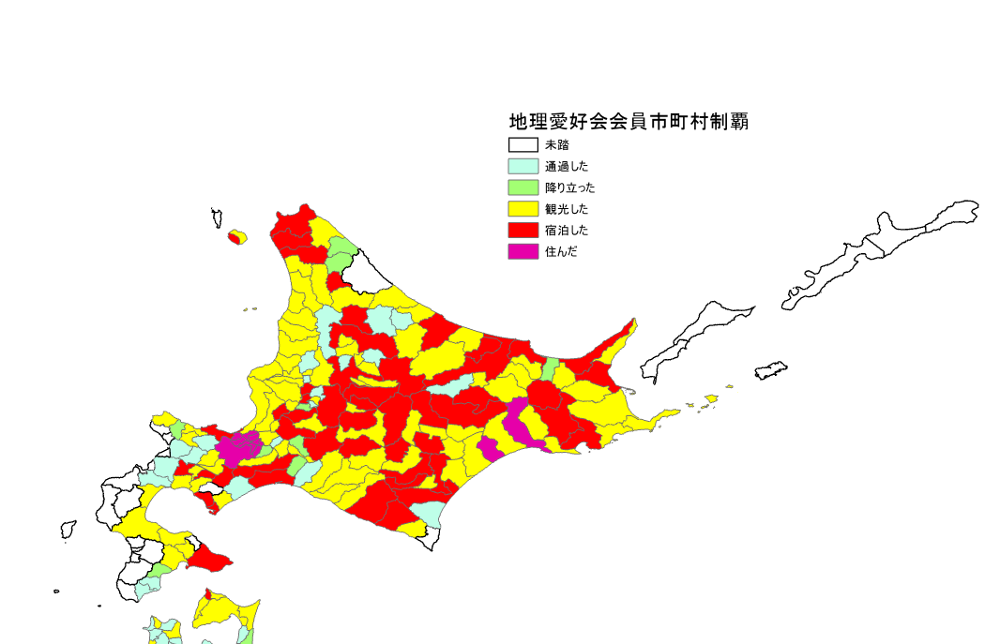

みなさん、市区町村制覇という概念はご存知でしょうか？これは全国の市町村全てを訪れようという試みのことです。都道府県制覇は有名で作ってみたことがある人も多いかもしれません。この経県値というアプリが有名ですね。居住を5点、宿泊を4点、観光を3点、立ち寄りを2点、通過を1点として計算するものです。なお、筆者の生涯経県値は現在187点です。あと4県泊まっていない県があるのでそのうち埋めなきゃですね～
さて、全都道府県制覇くらいならまあそこそこ気合があればできますが、尋常じゃない気合が要求されるのが全市区町村制覇です。2021年9月29日現在、日本には1741の市区町村があります(北方領土除き23区を入れる場合）もし仮にすべての自治体での宿泊を目指すと最短で5年弱かかります。なかなかキビシイ
そこで
筑波大学地理愛好会会員に協力を依頼し、会員の合算で市区町村制覇を行ってみるとどうなるか、ということを実験してみました！！旅行好きが集まり、出身も多岐に渡る当会のメンバーでも訪れたことがない場所というのは果たして存在するのでしょうか？
結果
まずどの程度市区町村制覇できたかの表をお見せいたします。
多くの会員で埋めてみると多くの市区町村が埋まります。誰かしら通過したことのある自治体だと9割弱、6割強の自治体が観光済みです。市区町村制覇の埋まり方にはどのような特徴があるか、各地方ごとにみていきたいと思います。
北海道
上図は北海道の制覇MAPです。主要な都市だけではなく万遍なく埋まっていますね。未踏として残っているのは渡島半島西部と枝幸町、あとえりも町が埋まっていないというのは意外です。あと北方領土（なお、政令指定都市について地図では区の境界も表示されたまま放置してるのですが制覇は市単位でカウントしています。）
東北・新潟
こちらが東北・新潟です。概ね有色となっていますが未踏自治体が点在していますね（本当は通過しているけどつけ忘れたというのも多そう）
関東
一番分布パターンがちゃんと見えて面白かったのはこの地方ですね。関東地方に着目すると東京を中心にして3層の同心円状な構造が見てとれます。最も中心にあるのが23区やその付近の居住・宿泊が埋まっている中心部、そしてその外側にあるのが宿泊は行われていないが観光が行われている層、最も外側にある（房総半島先端や栃木県北部・群馬県北部・神奈川県西部付近など）のが宿泊が行われている層です。中心部は居住したことのある会員が多い＆他地方出身者が宿泊先として選定しやすいため宿泊or居住となっている、その一つ外側の層は宿泊を伴う訪問目的に欠けていること、最も外側の層は日光や那須、水上や草津、箱根や勝浦・鴨川など著名な観光地が多く宿泊を伴う訪問を行った会員が多いからこのような傾向が生まれたというような説明ができます。
中部（新潟除く)
関東地方と比べると読み取りが難しいですが、関東地方同様、大都市（名古屋）からある一定程度
離れた自治体は宿泊以上が埋まりにくい傾向があるようにみえるような気がしなくもない。未踏はちょくちょくある感じですね。
関西
関西の出身者が少ないからか前2つに比べてあまり埋まっていないようにみえます。奈良県の南部とかがまだまだですね。
中国・四国
主要な都市は宿泊以上になっており、あとは様々といった感じでしょうか。中国山地の自治体なんかがあまり埋まっておりません。
九州
北部の方が若干南部よりも埋まっているといった感じでしょうか。
南西諸島

沖縄本島は埋まっていますが、それ以外があまり埋まっていないですね。奄美や宮古島に行ったことある人がいないのは意外。
なお、紙幅の都合上伊豆と小笠原は割愛いたしましたが、大島・八丈島は宿泊、あとは未踏が多いという感じです。
まとめ
会員の皆さんで協力すると多くの自治体が制覇できました。この過程で見えてきたことは
・山間部や離島などは埋まりにくい。対して主要都市や著名な観光地がある自治体はだいたい4以上になっている。
・未踏が塊状に残っている地域もある
・東京のような大都市周辺には三層の構造が見える？？
といった感じでしょうか。まあそんなことはともかく全市区町村制覇を気合で目指せばいいんですよ。目指せ全市区町村居住！
謝辞・参考文献
入力にご協力いただいた会員の皆様ありがとうございました。また、地図の作成にあたり、国土地理院発行の数値地図（国土基本情報）とESRI ジャパンの全国市区町村界データを使用しました。